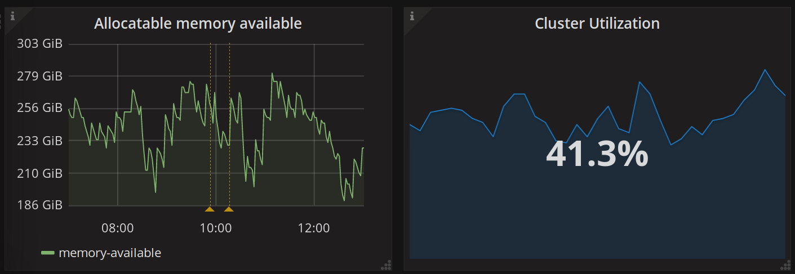

Operational Dashboards with Grafana¶
We use Grafana for creating dashboards from our metrics. Dashboards are useful for understanding the current status of the system and all its components at a glance. They are also very useful to try and debug what is going wrong during / after an outage.
What is it?¶
A dashboard is a set of pre-defined graphs in a particular layout that provide an overview of a system. In our case, they provide an overview of the operational metrics of the components that make up mybinder.org.
Where is it?¶
Our dashboards are at grafana.mybinder.org. It is public for everyone to view - but to edit, you need an admin password that is private. Open an issue in jupyterhub/mybinder.org-deploy if you want write access to the dashboards.
You can click the button to the right of the Grafana logo in the top left, and it will open a drop-down menu of dashboards for the mybinder.org deployment.
Modifying dashboards¶
Each dashboard is edited directly from the user interface (if you have
access to edit it). You can click on any graph and select the Edit option
to see what queries make up the dashboard, and how you can edit it.
All the dashboard definitions are stored in an sqlite database on a
disk attached to the running grafana instance.
The Grafana documentation has more info on the various concepts in Grafana, and how you can use them. You can also create a new dashboard and play with it. Be careful before editing currently used dashboards!
Installation & Configuration¶
Grafana is installed with the Grafana helm chart.
You can see the options for configuring it documented in its
values.yaml
file. You can also see the specific ways we have configured it
in the grafana section of mybinder/values.yaml, config/prod.yaml
and config/staging.yaml.
Annotations¶
Annotations are a cool feature of Grafana that lets us add arbitrary markers tagged to all graphs marking an event that has happened. For example, you can create an annotation each time a deployment happens - this puts a marker with info about the deployment on each graph, so you can easily tell if a particular deployment has caused changes in any metric. This is very useful for debugging!
We use the script in travis/post-grafana-annotation.py to
create annotations just before each deployment. See the docstring in
the script for more details.